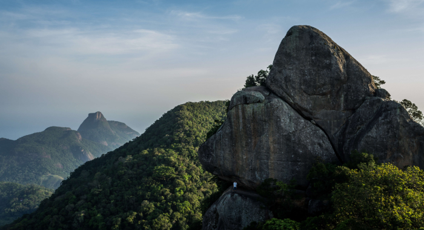
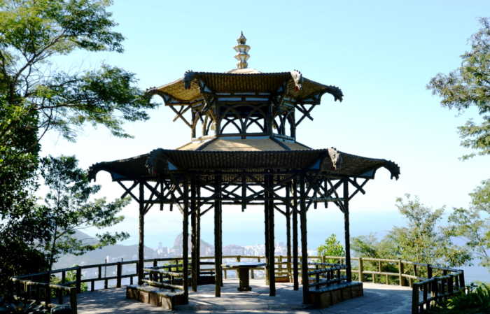

1. Parque Nacional da Tijuca (Floresta da Tijuca)
Reflorestada durante o período imperial, a Floresta da Tijuca possui
um gigantesco parque muito bem administrado com inúmeras opções de passeio.
Trilhas e mais trilhas, cachoeiras, mirantes, grutas, ruínas… A lista de opções não para! A entrada para o parque fica na praça Afonso Viseu, localizada no Alto da Boa Vista, que possui um bar com ótimas opções no cardápio, um hostel e até um posto de gasolina logo adiante.
Trilhas e mais trilhas, cachoeiras, mirantes, grutas, ruínas… A lista de opções não para! A entrada para o parque fica na praça Afonso Viseu, localizada no Alto da Boa Vista, que possui um bar com ótimas opções no cardápio, um hostel e até um posto de gasolina logo adiante.

Trilhas como a do Pico da Tjiuca, Bico do Papagaio e da Vista Chinesa possuem um panorama da floresta,
assim como uma vista privilegiada de pontos da cidade. É possível enxergar a Zona Norte, Zona Sul
e Zona Oeste do Rio.

Andando pela imensidão da floresta, é comum que se esqueça de que estamos na região
metropolitana de uma grande cidade.